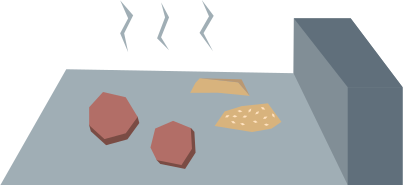

New World
Labour
Labour
Navigating the
of


Meet Joe, Joe just got his first job flipping burgers. He’s having a hard time keeping up with his manager’s demands and finds himself constantly stressed out.
Joe feels inadequate. Wasn’t flipping burgers supposed to be easy?

34% of surveyed mentally ill employees reported workplace stress as a primary contributor to their illness

17% of Food service workers abuse substances, the highest rate of substance abuse among the working class
Low wage workers tend to have little control over their work. Studies have shown that lack of control at work poses a higher risk of heart disease than smoking.
